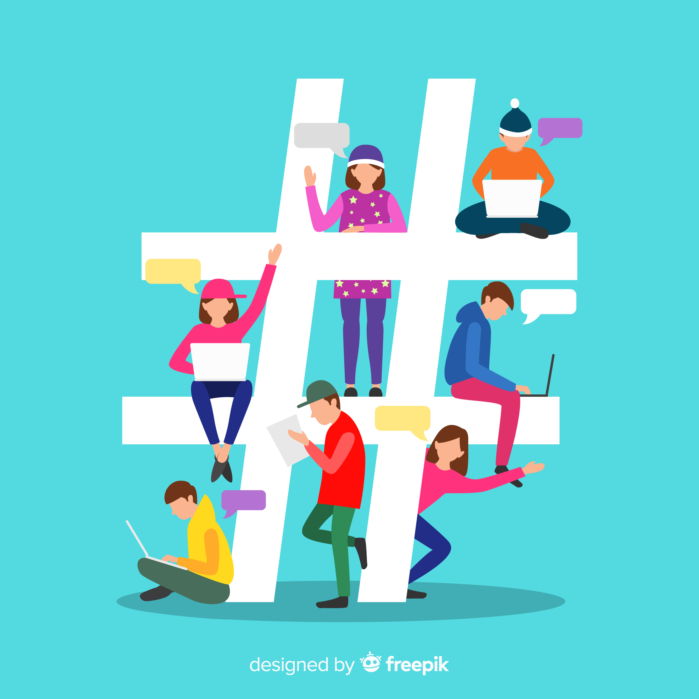
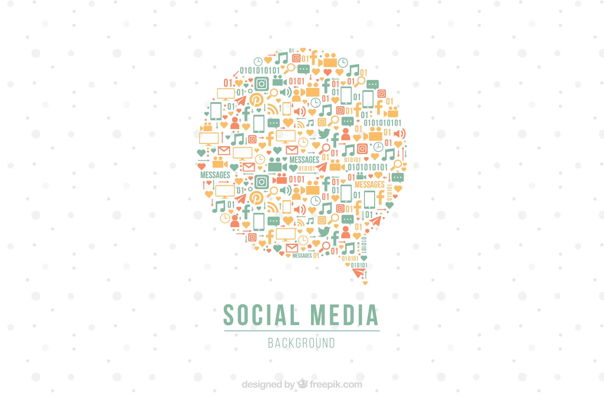

Hvordan påvirker sociale medier os?
Sociale medier spiller en stor rolle i vores hverdag, de forbinder os, underholder og inspirerer, men kan også skabe pres og sammenligning. Her kan du udforske, hvordan platforme som TikTok, Instagram og Snapchat påvirker vores vaner, trivsel og syn på os selv.



Platforme
Læs om Instagram, TikTok og Snapchat — hvad bruges de til, og hvordan påvirker de os?
Gå til sideReflektion
Få et indblik i, hvordan sociale medier former unges hverdag — både fællesskab og pres.
Gå til side